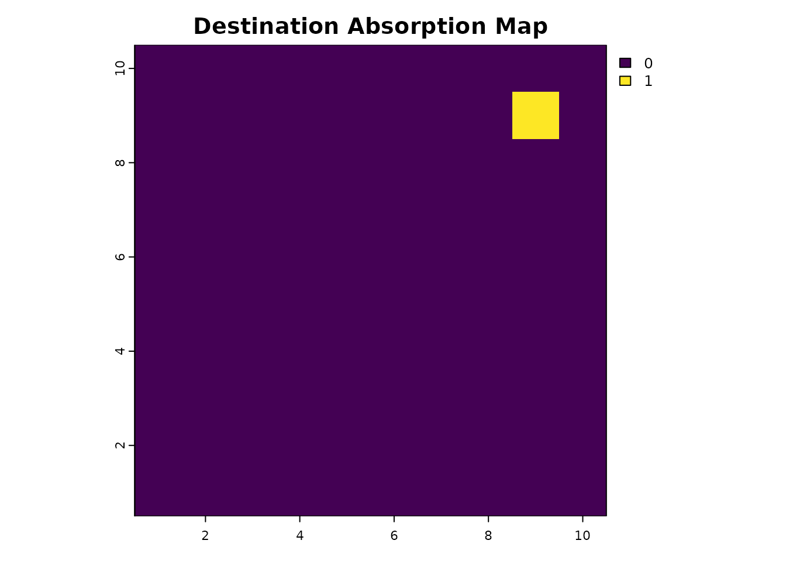
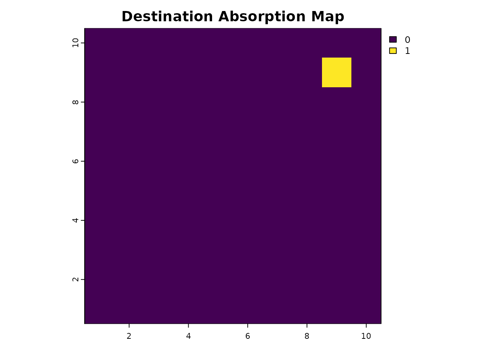
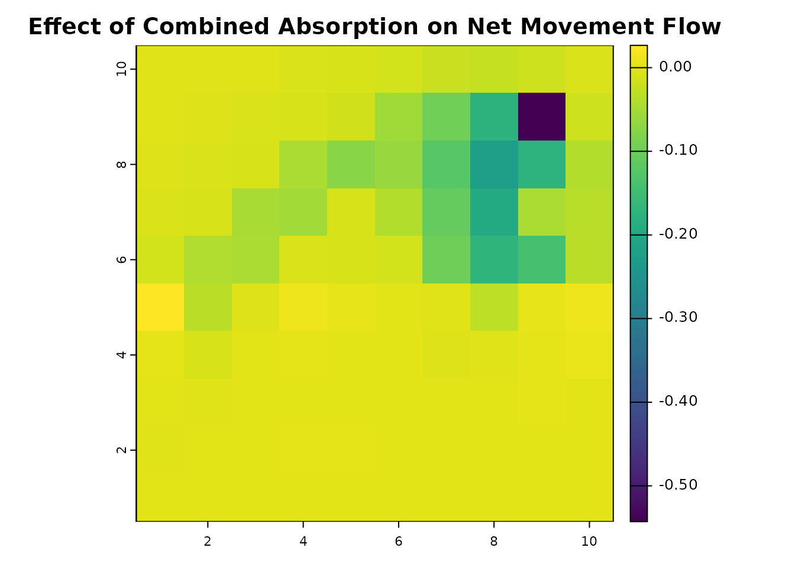

Circuit Theory
Andrew Marx
2024-10-30
Source:vignettes/article-circuit-theory.Rmd
article-circuit-theory.RmdBackground
This document describes the relationship between the samc package and circuit theory, as presented in an article published in Methods in Ecology and Evolution (2022; DOI: 10.1111/2041-210X.13975) and at a workshop during the 2021 International Association for Landscape Ecology - North American annual meeting: IALE-NA 2021 Workshops.
Circuit theory (McRae et al. 2008) is a widely used tool in ecology and conservation for modeling landscape connectivity. It can be used to calculate several different metrics, including:
- Commute time or resistance distance
- Net flow from one node to another
- Probability of reaching nodes
Both SAMC and circuit theory use Markov chain theory to model movement based on variations in the landscape coded as resistance values. However, SAMC extends these capabilities by utilizing absorbing Markov chains, which allow it to model a variety of short- and long-term metrics. SAMC also allows for explicitly incorporating multiple absorption states into the model. These states can represent any effect that might permanently stop movement in the landscape, such as:
- Natural death
- Predation probability
- Disease risk
- Human removal
- Non-mortality causes (e.g., permanent settlement)
Code Setup
This section is for loading the packages and creating objects used in the examples. The resistance data has two low-resistance routes between the source and destinations. The absorption data has no background absorption, but does have a narrow strip of strong absorption that runs across most of the map, but not across the left route. This is the same example data used in the IALE workshop, where the absorption data was used to describe a hypothetical highway with a safe crossing area for the left route.
library("terra")
library("raster")
library("gdistance")
library("samc")
library("viridisLite")
# Create a landscape with two paths around an obstacle
# This is the same
res_data = matrix(c(20, 20, 20, 10, 10, 5, 5, 10, 10, 10,
20, 20, 10, 10, 10, 1, 1, 1, 1, 10,
10, 10, 10, 1, 1, 1, 1, 1, 1, 5,
10, 10, 1, 1, 20, 1, 1, 1, 10, 10,
5, 1, 1, 20, 20, 20, 1, 1, 1, 5,
10, 1, 20, 20, 20, 20, 20, 1, 1, 2,
10, 1, 20, 20, 20, 20, 2, 2, 1, 1,
20, 1, 1, 10, 10, 10, 2, 1, 1, 1,
20, 1, 1, 1, 1, 1, 1, 1, 2, 2,
10, 10, 10, 10, 1, 1, 5, 5, 5, 5),
nrow = 10, byrow = TRUE)
abs_data = res_data * 0 # Create a baseline mortality or absorption level. To experiment with background mortality rates, add a small number to this (e.g., `+ 0.0001`)
abs_data[6, c(1, 4:10)] = 0.1 # Create a "highway" with high absorption and a safe crossing point
abs_data[is.na(res_data)] = NA
res_data = samc::rasterize(res_data)
abs_data = samc::rasterize(abs_data)
plot(res_data, main = "Example Resistance Data", xlab = "x", ylab = "y", col = viridis(256))
plot(abs_data, main = "Example Absorption Data", xlab = "x", ylab = "y", col = viridis(256))
rw_model = list(fun = function(x) 1/mean(x), dir = 8, sym = TRUE)
samc_obj = samc(res_data, abs_data, model = rw_model)
origin_coords = matrix(c(2, 2), ncol = 2)
dest_coords = matrix(c(9, 9), ncol = 2)
origin_cell = locate(samc_obj, origin_coords)
dest_cell = locate(samc_obj, dest_coords)
gdist = transition(raster::raster(res_data), rw_model$fun, rw_model$dir)
gdist = geoCorrection(gdist)

Commute Time and Hitting Time
Commute time (sometimes referred to as commute distance), is the expected length of time, or the number of steps, it takes to go from one node to another and back in a graph using a random walk. In circuit theory, commute time is proportional to the resistance distance between two nodes (Chandra et al., 1997). This measure is bidirectional; it is the sum of going from one node to another and back. Let us refer to commute time as where is the commute time from node to node and then back to node .
Hitting time, or first passage time, is the expected time, or the number of steps, it takes to go from one node to another using a random walk. This measure is unidirectional; it only accounts for going from one node to another, but not back. The hitting times may not be equal for different directions between two nodes depending on the situation. Let us refer to hitting time using , where is the hitting time from node to node , and is the hitting time from node to node . and may or may not be equal.
Given these definitions, the sum of the two hitting times between two nodes is the same as the commute time between the two nodes. That is, .
Circuit theory can be used to calculate the commute time between two
points via tools like Circuitscape (indirectly from resistance outputs)
or the gdistance R package (directly with the
commuteDistance() function). In the SAMC, it can be
calculated by adding the hitting times in both directions. There are two
ways in which hitting times can be calculated with SAMC.
The first (limited) approach to calculating hitting times via SAMC is
with the survival() metric. This requires creating two
samc objects (one for each direction between two nodes). To
do so, the only non-zero absorption value needs to be at the destination
node
(
or
,
depending on the direction). As long as absorption only occurs at the
destination node and has an absorption probability of 1,
the survival() function will calculate the first passage
time to that node. Applying the survival() function to both
samc objects and summing the results will provide the commute time. This
approach is limited because it does not broadly allow for variation in
absorption; graphs with absorption occurring outside the destination
nodes
(
and
)
require an alternative approach.
# Absorption only at the origin i
abs_data_i = res_data * 0
abs_data_i[cellFromXY(res_data, origin_coords)] = 1
plot(abs_data_i, main = "Source Absorption Map", col = viridis(256))
# Absorption only at the destination j
abs_data_j = res_data * 0
abs_data_j[cellFromXY(res_data, dest_coords)] = 1
plot(abs_data_j, main = "Destination Absorption Map", col = viridis(256)) 

# Create samc objects for each direction
samc_ij = samc(res_data, abs_data_j, model = rw_model)
samc_ji = samc(res_data, abs_data_i, model = rw_model)
# Calculate commute distance with samc
hitting_ij = survival(samc_ij, abs_data_i) # Reusing the other abs layer as an occupancy input
hitting_ji = survival(samc_ji, abs_data_j) # Reusing the other abs layer as an occupancy input
hitting_ij
#> [1] 210.222
hitting_ji
#> [1] 293.0998
hitting_ij + hitting_ji
#> [1] 503.3218
# Calculate commute distance with gdistance
commuteDistance(gdist, rbind(origin_coords, dest_coords))
#> 1
#> 2 501.3218There are a few key things to note here. First, the two commute
distance results are slightly different. This is because SAMC is
calculating the time to reach the destination plus one additional time
step for absorption. In circuit theory, these two transitions are not
considered separately; that is, reaching the destination is equivalent
to going to the ground state (absorption). This occurs twice (once in
each direction), which causes SAMC to have a commute distance that is
2 time steps higher than what gdistance calculates.
The second thing to note is that the two hitting times produced by SAMC are also slightly different. In other words, movement in one direction between the two points is not equivalent to movement in the other direction. This extra information about the total commute distance can be useful in a real-world scenario. For example, gene flow between two populations may be different in both directions. In this case, the hitting times, rather than commute distance, may result in better models comparing gene flow to landscape connectivity.
The second and more flexible approach in SAMC is the
cond_passage() function, which directly calculates the
“conditional” first passage time in graphs where absorption can occur
anywhere. It is “conditional” because it only considers possible paths
through the graph where the destination node is reached. In other words,
when absorption is possible anywhere, there will be scenarios where the
destination is never reached, and these scenarios have to be excluded
for the calculation to work.
cond_passage() can be used in the same way described for
the survival() metric previously, in which case an
equivalent result to commute distance from circuit theory will be
obtained. Unlike the survival() function, the result of
cond_passage() does not include the extra absorption time
step; it only calculates the time to reach the destination.
hitting_ij_cp = cond_passage(samc_ij, origin = origin_cell, dest = dest_cell)
hitting_ji_cp = cond_passage(samc_ji, origin = dest_cell, dest = origin_cell)
hitting_ij_cp
#> [1] 209.222
hitting_ji_cp
#> [1] 292.0998
hitting_ij_cp + hitting_ji_cp
#> [1] 501.3218More importantly, this is just a special case where we demonstrate
the relationship between circuit theory and SAMC. For more generic
scenarios, only a single normal samc object is required for
calculating the hitting times:
# Calculate hitting times and commute distance for the original absorption data
reg_hitting_ij = cond_passage(samc_obj, origin = origin_cell, dest = dest_cell)
reg_hitting_ji = cond_passage(samc_obj, origin = dest_cell, dest = origin_cell)
reg_hitting_ij
#> [1] 128.2726
reg_hitting_ji
#> [1] 127.6531
reg_hitting_ij + reg_hitting_ji
#> [1] 255.9258In this case, the resulting commute distance is much lower because absorption occurs throughout the landscape. In the simplified scenario, a lack of absorption (except for the destination) means that all possible movement paths will eventually reach the destination. In contrast, with landscape absorption, we now have scenarios where some of those same movement paths are absorbed before reaching the destination. Since those removed paths tended to be longer, their removal caused the overall commute time to decrease.
To think about this, consider a landscape without any absorption. In this scenario, individuals will continuously move around forever. This leads to infinitely long paths. Once absorption is incorporated into the landscape, the probability of these infinitely long paths occurring decreases. As the overall probability of absorption in the landscape increases, the overall probability of infinitely long paths occurring will decrease. That is what happens when we switch from a circuit theory model with only a single ground node (effectively a single absorption point) to a SAMC model that allows absorption anywhere; the probability of individuals existing indefinitely in the landscape will decrease, and ideally, model a more realistic scenario.
Consider this in the context of dispersal and gene flow;
realistically, an individual dispersing from one population might never
make it to another population. For example, they might die along the
way. As a result, they would not contribute to gene flow between the two
populations in this case. SAMC provides a mechanism to account for this
possibility via the cond_passage() function and the
incorporation of absorption more broadly.
Net and Total Movement Flow
One application of circuit theory is the construction of current maps that describe the net movement from one node to another. There is an essential distinction between net and total movement flow here; net movement is the difference between movement flows in opposite directions, whereas total movement is the sum of the movement flows in opposite directions. These “current” flow maps are commonly used to identify movement corridors and pinch points that may occur in landscapes.
Current maps produced by Circuitscape model the net flow, and the
gdistance package can model both with the passage()
function. The samc package can calculate the total movement
directly using the visitation() metric and the net movement
flow using the visitation_net() function. To get equivalent
results between gdistance and SAMC, we must again disregard absorption
outside the destination.
# Total movement flow with gdistance
total_gdist = passage(gdist, origin_coords, dest_coords, theta = 0, totalNet = "total")
total_gdist_ras = rast(total_gdist)
plot(total_gdist_ras, main = "Total Movement Flow (gdistance)", col = viridis(256))
# Equivalent total movement flow with SAMC
total_samc = visitation(samc_ij, origin = origin_cell)
total_samc_ras = map(samc_ij, total_samc)
plot(total_samc_ras, main = "Total Movement Flow (samc)", col = viridis(256))
# Verify that they have the same values
all.equal(as.vector(total_gdist_ras), as.vector(total_samc_ras))
#> [1] TRUE
# Net movement flow with gdistance
net_gdist = passage(gdist, origin_coords, dest_coords, theta = 0, totalNet = "net")
net_gdist_ras = rast(net_gdist)
plot(net_gdist_ras, main = "Net Movement Flow (gdistance)", col = viridis(256))
# Equivalent net movement flow with SAMC
net_samc = visitation_net(samc_ij, origin = origin_cell)
net_samc_ras = map(samc_ij, net_samc)
plot(net_samc_ras, main = "Net Movement Flow (samc)", col = viridis(256))
# Verify that they have the same values
all.equal(as.vector(net_gdist_ras), as.vector(net_samc_ras))
#> [1] TRUE


As with commute distance, SAMC is not limited to calculating the
total and net movement flows for landscapes without absorption.
visitation() and visitation_net() are
perfectly valid for our original samc object with broader landscape
absorption. Here is an example where we combine the destination
absorption point with the absorbing barrier:
comb_abs = abs_data_j + abs_data
plot(comb_abs, main = "Combined absorption", col = viridis(256))
samc_comb = samc(res_data, comb_abs, model = rw_model)
comb_net = visitation_net(samc_comb, origin = origin_cell)
comb_net_res = map(samc_comb, comb_net)
plot(comb_net_res, main = "Net Movement Flow (samc with combined absorption)", col = viridis(256))

Incorporating absorption more broadly has reduced the net movement flow between our start and end points because now the destination is not guaranteed to be reached, leading to a dramatic drop in the net movement at the destination cell. We can subtract the non-absorption model from the absorption model to see how much net movement flow has decreased.
comb_net_diff = comb_net_res - net_gdist_ras
plot(comb_net_diff, main = "Effect of Combined Absorption on Net Movement Flow", col = viridis(256))
# Bin for easier interpretation
comb_net_diff_binned = classify(comb_net_diff, rcl = c(-1, -0.1, -0.01, 0, 0.01, 0.1, 1), right = FALSE)
plot(comb_net_diff_binned, main = "Effect of Combined Absorption on Net Movement Flow (Binned)", col = viridis(256))
Overall, we see that net flow has increased on the bottom half and decreased on the top half. Intuitively, net flow in the top half is reduced because the barrier is absorbing some of the flow coming from below. The increase in net flow in the bottom half may be less intuitive, but occurs because movement that would have been originally reached the top half is now partially being absorbed in both directions. So since there is less movement from the top half into the bottom half, that means the net flow in the bottom half is less affected by that return flow.
We also see that movement flow on the right path becomes significantly restricted by the absorption barrier, making the left path relatively more important for movement flow from the start to the end. Yet, despite an opening in the barrier, we still see a noticeable drop in flow in the left path. Finally, we can see a substantial decrease in the net movement flow reaching the destination. We can look at the values directly to see that reduction is over 98%:
net_samc_ras[dest_cell] # Net movement flow at destination w/o absorption
#> lyr.1
#> 1 1
comb_net[dest_cell] # With absorption
#> [1] 0.4571945